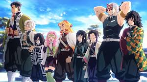

Tanjiro Kamado
 character and the protagonist of Koyoharu Gotouge's manga Demon Slayer: Kimetsu no Yaiba.
character and the protagonist of Koyoharu Gotouge's manga Demon Slayer: Kimetsu no Yaiba.
 Tanjiro Kamado (竈門かまど 炭たん治じ郎ろう Kamado Tanjirō?) is the main protagonist of Demon Slayer: Kimetsu no Yaiba. He is a Demon Slayer in the Demon Slayer Corps who joined to find a remedy to turn his sister, Nezuko Kamado, back into a human and to hunt down and kill demons,and later swore to defeat Muzan Kibutsuji,the King of Demons, in order to prevent others from suffering the same fate as him.
Before he became a Demon Slayer, Tanjiro was a coal burner before his family was slaughtered by Muzan, while his younger sister, Nezuko, was turned into a demon.
Tanjiro Kamado (竈門かまど 炭たん治じ郎ろう Kamado Tanjirō?) is the main protagonist of Demon Slayer: Kimetsu no Yaiba. He is a Demon Slayer in the Demon Slayer Corps who joined to find a remedy to turn his sister, Nezuko Kamado, back into a human and to hunt down and kill demons,and later swore to defeat Muzan Kibutsuji,the King of Demons, in order to prevent others from suffering the same fate as him.
Before he became a Demon Slayer, Tanjiro was a coal burner before his family was slaughtered by Muzan, while his younger sister, Nezuko, was turned into a demon.
 Zenitsu Agatsuma (我あが妻つま 善ぜん逸いつ Agatsuma Zen'itsu?) is one of the main characters of Demon Slayer: Kimetsu no Yaiba. He is a Demon Slayer in the Demon Slayer Corps and a travelling companion and friend of Tanjiro Kamado and Nezuko Kamado, along with Inosuke Hashibira.
Zenitsu Agatsuma (我あが妻つま 善ぜん逸いつ Agatsuma Zen'itsu?) is one of the main characters of Demon Slayer: Kimetsu no Yaiba. He is a Demon Slayer in the Demon Slayer Corps and a travelling companion and friend of Tanjiro Kamado and Nezuko Kamado, along with Inosuke Hashibira.
 Inosuke Hashibira (嘴はし平びら 伊い之の助すけ Hashibira Inosuke?) is one of the main characters of Demon Slayer: Kimetsu no Yaiba. He is a Demon Slayer in the Demon Slayer Corps and a travelling companion of Tanjiro Kamado and Nezuko Kamado, along with Zenitsu Agatsuma.
Inosuke Hashibira (嘴はし平びら 伊い之の助すけ Hashibira Inosuke?) is one of the main characters of Demon Slayer: Kimetsu no Yaiba. He is a Demon Slayer in the Demon Slayer Corps and a travelling companion of Tanjiro Kamado and Nezuko Kamado, along with Zenitsu Agatsuma.

Hashira is the highest rank that Demon Slayers can obtain in the Demon Slayer Corps. Those who hold the position are regarded as the most powerful and skilled combatants in the entire organization, protecting humanity against more dangerous threats that cannot be handled by other Demon Slayers.